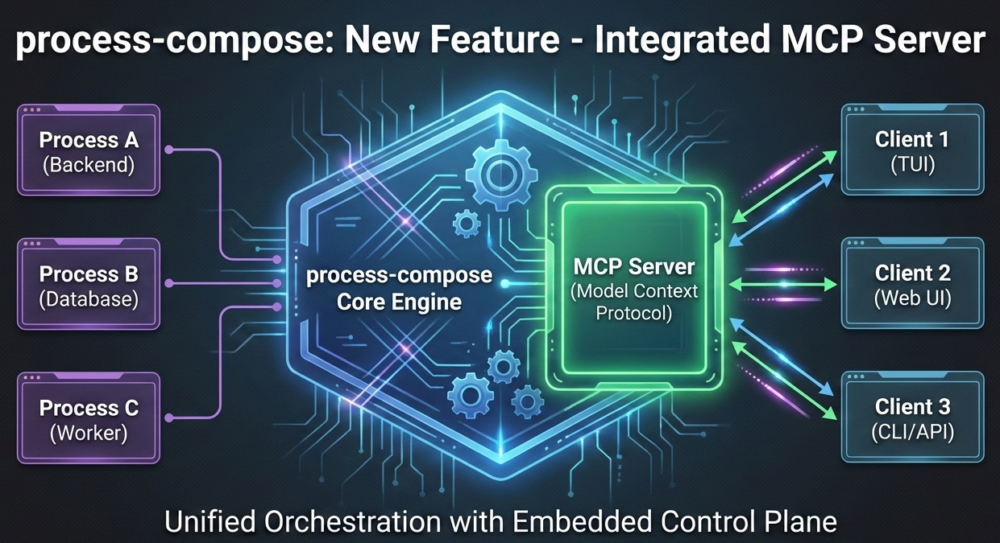

Embedded MCP Server Support in process-compose (v1.94.0)

Process-compose now includes embedded MCP (Model Context Protocol) server support. This allows you to expose your existing processes as tools or resources that AI assistants can invoke directly.
Why MCP?
The Model Context Protocol (MCP) provides a standard way to connect AI assistants to external tools. Typically, adding MCP support means writing a dedicated wrapper in Python, TypeScript, or Go.
With process-compose, you can bypass the SDKs. If you can define a shell command in your process-compose.yaml, you can expose it to an AI client like Claude, Cursor, or vs-code.
Configuration
Enable the MCP server by adding an mcp_server section. You can use either sse (HTTP) or stdio transport.
mcp_server:
host: localhost
port: 3000
transport: sse # Use 'stdio' for IDE integrations like Cursor
processes:
list-files:
command: "ls -R @{directory}"
description: "List files recursively"
disabled: true # MCP processes must be disabled initially
mcp:
type: tool
arguments:
- name: directory
type: string
description: "Directory to list"
required: true
Use Cases
1. Developer Tooling as AI Tools
Turn your local scripts, Docker commands, or Kubernetes operations into AI-accessible resources without writing any new code.
processes:
generate-report:
command: "python reports/generate.py @{report_type} @{date_range}"
description: "Generate report"
mcp:
type: tool
arguments:
- name: report_type
type: string
description: "Type of report (sales, users, performance)"
- name: date_range
type: string
description: "Date range in YYYY-MM-DD:YYYY-MM-DD format"
You're not locked into any language. Python ML tools, Rust performance tools, Node.js API wrappers, bash scripts—they all coexist in one MCP server.
2. Your Development Environment as an AI Copilot
I spend half my day debugging local services. "Why isn't the auth service working?" usually means checking logs, restarting containers, hitting health endpoints. Now AI can do that:
processes:
restart-service:
command: "docker-compose restart @{service_name}"
description: "Restart service"
mcp:
type: tool
arguments:
- name: service_name
type: string
description: "Name of the service to restart"
check-health:
command: "curl -s http://localhost:@{port}/health | jq"
mcp:
type: tool
arguments:
- name: port
type: integer
description: "Port number of the service"
get-logs:
command: "docker logs @{container} --tail @{lines}"
mcp:
type: tool
arguments:
- name: container
type: string
description: "Container name"
- name: lines
type: integer
description: "Number of log lines to retrieve"
Now I can tell Claude: "My authentication service isn't responding, can you check what's wrong?" and it can actually diagnose the issue by checking health, reading logs, and restarting services if needed.
3. Living Infrastructure Documentation
Runbooks get outdated. Documentation drifts. But with MCP + process-compose, your operations become self-documenting:
processes:
scale-deployment:
command: "kubectl scale deployment @{service} --replicas=@{replicas}"
mcp:
type: tool
arguments:
- name: service
type: string
description: "Name of the Kubernetes deployment to scale"
- name: replicas
type: integer
description: "Target number of replicas (1-10 for production)"
check-pod-status:
command: "kubectl get pods -l app=@{app_name} -o json | jq '.items[] | {name: .metadata.name, status: .status.phase}'"
mcp:
type: tool
arguments:
- name: app_name
type: string
description: "Application name label"
AI automatically knows what operations exist, what they do, and how to use them. The configuration IS the documentation.
4. Giving AI Read-Only Access (Resources)
Sometimes you don't want the AI to do things, you just want it to see things. In MCP, these are called Resources.
process-compose makes it trivial to pipe system stats or database queries into the AI's context window.
processes:
get-active-users:
command: "psql -c 'SELECT user_id, email, last_login FROM users WHERE active=true' -t -A -F',' | jq -Rs 'split(\"\n\")[:-1] | map(split(\",\") | {user_id: .[0], email: .[1], last_login: .[2]})'"
mcp:
type: resource
get-system-metrics:
command: "top -bn1 | head -20"
mcp:
type: resource
get-disk-usage:
command: "df -h | grep -v tmpfs | tail -n +2"
mcp:
type: resource
AI can now query your databases, check system status, read configuration—all without custom API wrappers.
5. Legacy System Integration
This one's close to my heart. Every company has that 20-year-old system with a CLI but no API. Making it AI-accessible used to mean a major rewrite. Not anymore:
processes:
legacy-report:
command: "java -jar legacy-reporter.jar --user @{user} --format json --filter '@{filter}'"
mcp:
type: tool
arguments:
- name: user
type: string
description: "Username for legacy system"
- name: filter
type: string
description: "Report filter criteria"
mainframe-query:
command: "expect scripts/mainframe-query.exp @{QUERY_STRING}"
mcp:
type: tool
arguments:
- name: query_string
type: string
description: "Query to execute on mainframe"
Bridge decades-old systems to cutting-edge AI without touching the legacy code.
6. Complex Multi-Step Workflows
Here's where process-compose really shines. You already have dependency management, so orchestrated AI workflows just work:
processes:
run-tests:
command: "pytest tests --json-report --json-report-file=report.json"
mcp:
type: tool
build-docker:
command: "docker build -t myapp:@{tag} ."
depends_on:
run-tests:
condition: process_completed_successfully
mcp:
type: tool
arguments:
- name: tag
type: string
description: "Docker image tag"
push-to-registry:
command: "docker push myapp:@{tag}"
depends_on:
build-docker:
condition: process_completed_successfully
mcp:
type: tool
arguments:
- name: tag
type: string
description: "Docker image tag to push"
Tell AI: "Run tests, and if they pass, build and push version 2.3.1" and it orchestrates the entire CI/CD pipeline.
7. Personal Automation Hub
Everyone has their own scripts. Now they can be AI-accessible:
processes:
backup-photos:
command: "rsync -av ~/Photos/ backup-server:/photos/ && echo '{\"status\": \"success\", \"files_copied\": '$(rsync -av --dry-run ~/Photos/ backup-server:/photos/ | grep -c 'uptodate')'}}'"
mcp:
type: tool
organize-downloads:
command: "python ~/scripts/organize_downloads.py @{folder} --output-format json"
mcp:
type: tool
arguments:
- name: folder
type: string
description: "Folder path to organize"
check-disk-space:
command: "df -h / | tail -1 | awk '{print \"{\\\"filesystem\\\":\\\"\" $1 \"\\\",\\\"size\\\":\\\"\" $2 \"\\\",\\\"used\\\":\\\"\" $3 \"\\\",\\\"available\\\":\\\"\" $4 \"\\\",\\\"percent\\\":\\\"\" $5 \"\\\"}\"}'"
mcp:
type: resource
"Hey Claude, backup my photos and let me know if I'm running low on disk space."
Why This Works So Well
The magic is that process-compose already handles the heavy lifting required for MCP:
- Process lifecycle management
- Output capture and buffering
- Error handling and exit codes
- Environment variable injection
- Dependency orchestration
- Logging and observability
- Health checks and monitoring
We're just exposing these capabilities through the MCP protocol. The integration is surprisingly thin because the foundations were already solid.
What Makes This Different
- Lowest barrier to entry: If you can write a shell command, you can create MCP tools. No SDK to learn.
- Language agnostic: Python, Rust, Go, Node.js, bash, legacy Java—they all work together seamlessly.
- Production ready: You get all of process-compose's production features (logging, health checks, restart policies) for free.
- Rapid iteration: Change a script, reload the config, test immediately. Process-compose's hot-reload works for MCP tools too.
- No vendor lock-in: Standard MCP protocol means compatibility with future AI assistants, and any MCP client.
- Leverage existing work: All your scripts, tools, and automation become AI-accessible without rewriting.
Technical Details
For those interested in the implementation, here's how it works:
- Single embedded MCP server using
github.com/mark3labs/mcp-go - Supports both
STDIOandSSEtransports - Tool arguments are validated against declared types (string, number, boolean, integer)
- Processes start on-demand and shut down after completion
- Output captured via process-compose's existing buffer mechanism
- Standard MCP error handling for non-zero exit codes
The configuration is validated at startup, so you catch issues early.
Try It Yourself
- Add
mcp_serverconfig to your process-compose YAML - Add
mcpsections to processes you want to expose - Start process-compose
- Connect any MCP client
That's it. Your scripts are now AI-callable tools.
I built process-compose to simplify orchestration. This integration is the logical next step: making that orchestration accessible not just to humans, but to the agents helping us work.
I can't wait to see what you build with it.
If you want to follow development or contribute, check out the process-compose. Issues and PRs welcome!
What tools would you expose via MCP? What problems would this solve for you? Let me know in the comments or on GitHub.